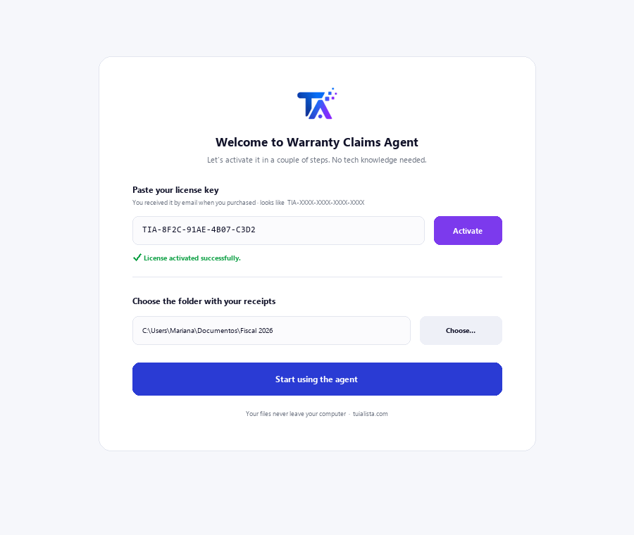
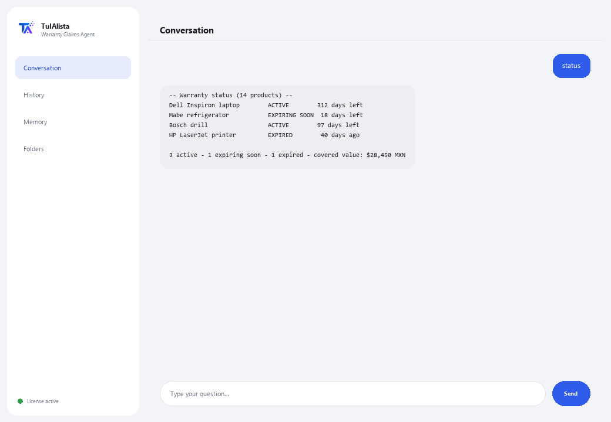

Warranty Claims Agent
Tracks your warranties, warns you before they expire, and generates the claim letter ready to send.
What does it solve and what do you need?
People and businesses lose money on warranties that expire with nobody checking them: an appliance, a laptop, a tool that broke while it was still covered. This agent turns your scattered receipts, invoices and proofs of purchase into an active recovery system.
- You need: your license key (TIA-XXXX-XXXX-XXXX-XXXX) and the folder with your receipts. No Python, no technical knowledge.
- First result in under 5 minutes: install, activate, pick your folder, and run status to see the status of all your warranties.
- Your receipts never leave your computer — the analysis runs locally.
soporte@tuialista.com or visit tuialista.com/soporte — we usually reply the same business day.1 What this agent does
You point it at the folder with your receipts, invoices and proofs of purchase, and it:
- Reads them (text, PDF, Word, Excel and CSV), without you opening them one by one.
- Extracts the purchase data: product, date, amount, store, serial number and warranty period.
- Calculates the status of each warranty: active, expiring soon, or expired.
- Alerts you about warranties expiring soon before it's too late.
- Generates a formal claim letter ready to send (referencing Mexico's consumer protection law and PROFECO).
- Calculates the total value of your still-covered products.
- Answers your questions: “is my laptop still under warranty?”
The result: you stop losing warranties by forgetting them, and you recover money that's rightfully yours.
2 Installation (2 minutes)
For Windows. No constant internet connection needed, and nothing gets uploaded to the cloud.
Download the installer from tuialista.com/descargar (Warranty agent) and open it. It creates a desktop shortcut with the logo — no Python or terminal needed.
Double-click the new icon. Paste your license key (you received it by email when you bought it) and click Activate. You'll see a green checkmark once it's valid.
Select the folder with your receipts and click Start using the agent. Next time it starts right up — it remembers your key and your folder.

3 How to use it
The agent opens a chat window, like a messaging app — not a programmer's black screen. You type your command or question in the text box below, hit Send (or Enter), and the reply appears as a message, just like in this real image:

The commands below are the words you can type in that same text box:
> statusAll your warranties: ACTIVE, EXPIRING_SOON, EXPIRED or NO_DATE, with days remaining.
> expiring [days]Warranties expiring in the next N days (30 by default), so you can claim on time. E.g.: expiring 60.
> claimableProducts with active warranty, showing whether you have all the data to claim or what's missing.
> claim <product>The formal claim letter ready to go, referencing Mexico's consumer law and PROFECO, with a space to describe the problem. E.g.: claim laptop.
> missingReceipts that are missing a key piece of data (date, amount, store, serial number) needed to claim.
> coveredAdds up the value of your products with active or soon-to-expire warranty.
> free-form question?Type any question in natural language, e.g.: how much warranty is left on my fridge?
> exitEnds the session (exit also works).
Want to see all 20 full recipes with a real example of each? Check the Recipe catalog — a separate document because it's long: catalogo_recetas.pdf next to this manual, or the interactive version at tuialista.com/guia/garantias/recetas.
4 Common use examples
Check what's expiring soon
expiring 45 — you see which warranties expire soon and decide if it's worth claiming now.
Claim a broken product
claimable → claim blender — you confirm it's still under warranty and get the letter ready.
Know how much you have covered
covered
Fill in what's missing
missing — you find out which receipts need more data before you can claim.
5 Frequently asked questions
Do my receipts get uploaded to the internet?
What formats does it accept?
How does it know the date, the amount and the warranty?
What happens if the receipt doesn't state the warranty period?
Is the claim letter legally valid?
What language does it reply in?
Does it read a scanned PDF?
Does it modify my files?
Can I change the folder?
Does it replace legal or consumer advice?
6 Troubleshooting
It won't read a .pdf, .docx or .xlsx
It shows “0 receipts”
It says “Invalid license” or asks to reconnect
“No AI providers configured”
None of these fixed your problem? Write to us directly — we'll gladly look into it with you.
soporte@tuialista.com or visit tuialista.com/soporte — we usually reply the same business day.7 Privacy and confidentiality
Your receipts never leave your computer.
- The agent reads and analyzes the files locally, on your own machine. It doesn't upload them to any server.
- Purchase data extraction and validity calculations happen on your machine.
- The only thing that travels over the internet is: (1) a check that your license is active — which doesn't include your receipts —, and (2) when generating a claim letter or asking a free-form question, a relevant fragment of information is sent to the AI engine to draft that reply.